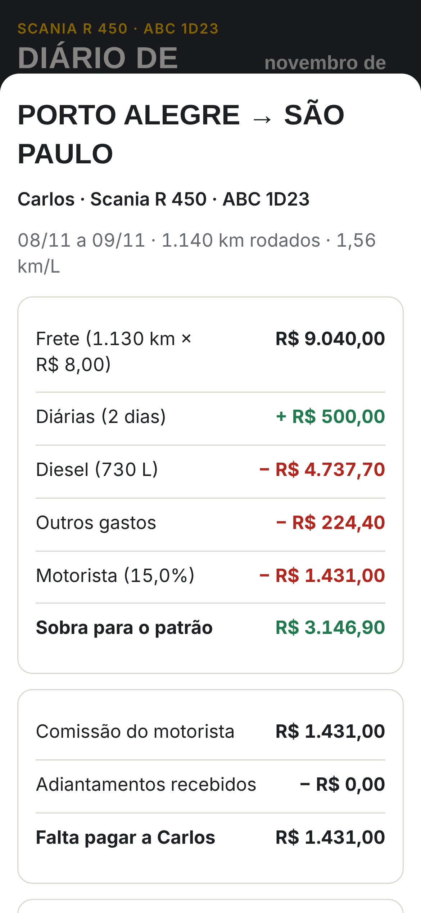

<!doctype html><html lang="pt-BR"><head><meta charset="utf-8"><style>
@font-face{font-family:B;src:url(fonts/barlow-latin-700-normal.woff2);font-weight:700}
@font-face{font-family:BC;src:url(fonts/barlow-condensed-latin-800-normal.woff2);font-weight:800}
*{margin:0;padding:0;box-sizing:border-box}
body{width:1080px;height:1350px;overflow:hidden;background:#16181b;color:#f4f3ee;font-family:B;position:relative}
#bg{position:absolute;inset:0;background:repeating-linear-gradient(-45deg,rgba(242,183,5,.045) 0 3px,transparent 3px 44px)}
.yel{color:#f2b705}.grn{color:#5fd39a}.red{color:#ff6b5b}.gr{color:#c9c5ba}
.w{position:absolute;inset:0;padding:90px 80px;display:flex;flex-direction:column}
.tag{align-self:flex-start;font:800 46px BC;letter-spacing:4px;color:#16181b;background:#f2b705;padding:8px 28px 2px;border-radius:12px;text-transform:uppercase}
h1{font:800 150px/.95 BC;text-transform:uppercase;margin-top:40px}
h2{font:800 110px/.98 BC;text-transform:uppercase;margin-top:30px}
p{font:700 46px/1.3 B;margin-top:30px;color:#e8e4da}
.n{width:170px;height:170px;border-radius:50%;background:#f2b705;color:#16181b;font:800 150px/1 BC;display:flex;align-items:center;justify-content:center;padding-top:14px}
.box{background:#22252a;border-radius:28px;padding:30px 40px;margin-top:30px;font:800 64px/1.15 BC;text-transform:uppercase}
.row{display:flex;justify-content:space-between;padding:8px 0}
.pg{position:absolute;right:70px;bottom:60px;font:700 34px B;color:#8b8e93}
.sw{position:absolute;left:80px;bottom:60px;font:800 40px BC;text-transform:uppercase;color:#f2b705}
.cta{align-self:flex-start;background:#f2b705;color:#16181b;font:800 80px BC;padding:22px 56px 12px;border-radius:999px;text-transform:uppercase;margin-top:40px}
</style></head><body><div id="bg"></div><div class="w" id="w"></div><div class="pg" id="pg"></div><div class="sw" id="sw"></div>
<script>
const n=+new URLSearchParams(location.search).get('n');
const C=[
`<div class="tag">Pra quem vive do frete</div><h1>3 jeitos de <span class="grn">sobrar mais</span> no frete</h1><p>O 2º quase ninguém faz.</p>`,
`<div class="n">1</div><h2>Saiba quanto custa <span class="yel">cada km</span></h2><div class="box"><div class="row"><span class="gr">Seu custo</span><span class="yel">R$ 3,53/km</span></div><div class="row"><span class="gr">Frete abaixo disso</span><span class="red">prejuízo</span></div></div><p>Diesel, pedágio, comida e manutenção, divididos pelos km rodados.</p>`,
`<div class="n">2</div><h2>Coloque a <span class="red">volta vazia</span> na conta</h2><div class="box"><div class="row"><span class="gr">Frete 1.200 km</span><span>R$ 8.000</span></div><div class="row"><span class="gr">Ida + volta</span><span>2.400 km</span></div><div class="row"><span class="gr">Custo × R$ 3,53</span><span class="red">R$ 8.470</span></div></div><p>Resultado: <b class="red">−R$ 470</b>. Você pagou pra trabalhar.</p>`,
`<div class="n">3</div><h2>Lance a <span class="yel">parcela e o seguro</span></h2><div class="box"><div class="row"><span class="gr">Parcela</span><span class="red">−R$ 4.800</span></div><div class="row"><span class="gr">Seguro</span><span class="red">−R$ 900</span></div></div><p>Senão você acha que sobrou mais do que sobrou.</p>`,
`<div class="tag" style="background:#5fd39a">Faz a conta pra você</div><h2 style="margin-top:20px">Diário de <span class="yel">Bordo</span></h2>
 <div style="display:flex;gap:40px;margin-top:30px;align-items:flex-start">
 <div><p style="margin-top:0">Lance frete, diesel, gastos e diárias no celular. No fim, veja quanto sobrou.</p></div></div>
 <div class="cta">R$ 24,90 por mês</div><p style="margin-top:20px;font-size:38px" class="gr">7 dias de garantia · Toque em Saiba mais</p>`];
document.getElementById('w').innerHTML=C[n];document.getElementById('pg').textContent=(n+1)+'/5';
document.getElementById('sw').textContent=n<4?'arrasta →':'';
document.getElementById('ft')
</script></body></html>
